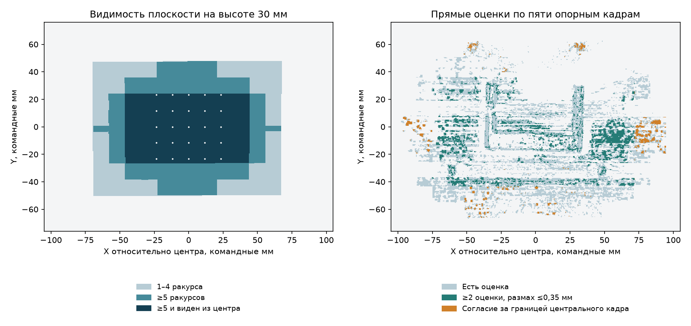

Инженерный разбор · 23 ноября 2026 · ветка dev, 1fe4d21
Измерение высоты и наведение по XY с целевой ошибкой 0,1 мм
Рекомендую начать с привязки к столу и объединения нескольких карт из уже снятых кадров. Последняя полная мозаика имеет согласование соседних кадров до 0,054 мм по p95 при расхождении с домашней меткой +4,657 мм по X. На последнем Z-скане смена опорного кадра позволила получить повторные оценки за границей поля центральной камеры. Для обоих улучшений подходит существующая механика.
Проверка по размерам детали и высоте калибровочной доски
После первого разбора получены физические ориентиры от владельца установки. Верх печатной поверхности доски принят за +9,10 мм от опорной поверхности стола, дно паза за −12,65 мм. Камеру можно механически перемещать по Z. П‑образная деталь проверена по исходным кадрам 17:12 без подгонки K, масштаба хода или нуля по её размерам. Данные о средстве и неопределённости эталонного обмера отсутствуют.
| Величина | Эталон, мм | Офлайн-проверка, мм |
|---|
| Высота плоских участков верха | 9,85–10,00 | Медианы прямых измерений по размеченным участкам: перемычка 10,153, левая ножка 10,223, правая 10,135. Валидны соответственно 10,7%, 53,3% и 19,4% выбранных окон. Превышение верхней границы 0,135–0,223 мм. |
| Наружная ширина | 67,67 | 66,37 по видимым наружным границам, разность −1,30. Диагностическая оценка в плоскости верха, возможна систематика фасок и выбора кромки. |
| Наружная длина боковых частей | 46,67 | По проекции от внешней задней линии до торцов около 46,09 слева и 46,30 справа. Сравнение предполагает, что именно эти поверхности использованы при ручном обмере. |
| Толщина перемычки в плане | 11,81 | Около 11,59 по максимумам градиента, центральные 80% отсчётов 10,59–11,69. Внутренний край и боковая стенка дают несколько границ на изображении. |
| Толщина ножек в плане | 4,76 | Надёжного результата по этим профилям нет. Для каждой стенки нужны согласованные границы из разных ракурсов с проверкой принадлежности к верхней плоскости. Фаски исключить или измерять отдельно. |
| Дно паза | −12,65 | При расширении поиска до −18 мм от исходной меточной плоскости медиана выбранного среднего участка −12,116, дальнего −11,752. Есть группы оценок около эталонной глубины и положительные ложные совпадения. |
Для Z использованы штатные параметры, 24 дополнительных вида, опорный кадр 12, заполнение отключено. Окна на исправленной карте 960×540 заданы в координатах (x,y). Перемычка — (285…670,183…222), ножки — (234…248,275…450) и (698…710,277…455). Для XY 25 исходных изображений перенесены на общую плоскость на высоте 10,186 мм по измеренной медиане верха. Максимумы градиента на медианном изображении прямолинейных участков переведены в физические мм пересечением лучей с этой плоскостью. Эталонные размеры в преобразование не входили. Точность XY ограничивают калибровка, неопределённость Z и выбор границы; вывод о едином коэффициенте масштаба для всей установки по такой детали преждевременен.
Проверка паза выполнена на одинаковых окнах и снимках с общей плоскостью локального стола. В среднем окне (318…615,353…390) при below=3 вернулись 438 прямых оценок с медианой +13,259 мм. При below=18 получены 992 оценки, 130 из них в пределах ±0,1 мм от −12,65. Разброс между 10-м и 90-м процентилями от −12,677 до +14,075 мм. В окно могут входить разные поверхности паза. Для измерения дна нужны видимость одной площадки минимум из нескольких направлений, проверка глубины при обратной проекции и отдельная маска стенок. Выбор только близких к эталону пикселей нарушил бы независимость проверки.
Калибровка фокуса, дисторсии и высоты установки
В расчёте ChArUco координаты печатного рисунка имеют собственную плоскость z=0. Смещение +9,10 мм ввести в преобразование «доска → стол». Для параллельных поверхностей и одной позы камеры расстояние до стола равно расстоянию до рисунка плюс 9,10 мм. Снятые под наклоном положения доски используются с индивидуальной позой. Метрический проход XY провести отдельно с доской плашмя и проверенной высотой её рисунка. В профиле сохранено 75,07 мм до доски у начала калибровочной сетки; условная оценка для стола там 84,17 мм. Близость к локальным 84,10 мм в скане 17:12 заслуживает проверки с доской и открытым столом в одной установке. Координаты и сессии двух оценок различаются.
На 37 сохранённых изображениях ChArUco серии 02.11 16:06 выполнен дополнительный контроль. Модели заново обучены на 28 изображениях. Девять файлов с номерами, кратными четырём, отложены целиком. Для каждого из них поза определена по чередующимся углам, остальные 414 точек суммарно проверены по репроекции и пересечению луча с плоскостью рисунка. Для обычной pinhole получен p95 плоской ошибки 0,178 мм по всем контрольным углам и 0,232 мм у границ изображения. Для rational — 0,163 и 0,185 мм соответственно. Граничная выборка содержит 115 углов с max(|x−960|/960, |y−540|/540) ≥ 0,75. Это внутренний контроль на номинальных координатах той же доски в одном разбиении. На результат влияют детектор, печать, плоскостность и оценка позы. Для выбора модели нужны отдельная серия и независимые контрольные длины.
- Оптика. При одном проверенном фокусе (сейчас 185), разрешении и режиме чтения снять доску в центре и у краёв, с наклонами в разные стороны вокруг двух осей. Использовать насколько возможно резкие рабочие расстояния. Проверить плоскостность носителя и шаг рисунка по двум осям на длинном отрезке. Выбирать модель по ошибкам на отдельных позах и по краям поля. Метод плоской калибровки Чжана
- Профиль. Включить в идентификатор оптики камеру, размер, формат/кроп и значение фокуса. После открытия проверять фактический ручной фокус. Сейчас имя по умолчанию в calibrate_distortion.py зависит от камеры, размера и модели; новая калибровка на другом фокусе может перезаписать предыдущую. Добавить в сеанс идентификатор оптики, положение Z, способ его определения и привязку к столу. При смене Z с фиксированной линзой начать с прежних K,D и обновлённой внешней позы; принять профиль только после проверки масштаба и остатков по полю. При смене фокуса использовать отдельно проверенные K,D.
- Перестановка камеры по Z. Снять доску на нескольких воспроизводимых высотах с возвратом к первой, каждый раз измерить позу по меткам, боковой уход, наклон и люфт. Для ручного подъёма достаточно подписанных установок с упором или измеренным положением и оптической привязкой. Если появится измеряемая ось, расширить V до XYZ с оценённым вектором хода Z или хранить полную позу каждого кадра. До этого выполнять отдельный XY-скан на каждой высоте. Текущий расчёт O=V·ΔXY принимает фиксированное положение камеры по Z.
- Рабочая дистанция. Если доска резкая при высоте головки H₀, равная рабочая дистанция получается при H=H₀+h−9,10 (положительное направление от стола, почти перпендикулярный ход). Для верха детали это +0,75…+0,90 мм относительно H₀, для стола −9,10 мм, для дна −21,75 мм. Это геометрические оценки. До движения проверить зазор у всей головки, крепежа и детали. Для паза начать с существующей высоты и ракурсов вдоль прорези; боковые стенки могут закрыть дно и при отличном фокусе. При необходимости применять отдельную высоту с измеренной позой и доступным зазором.
Первый эксперимент. Оставить фокус 185 и текущий режим. В одном сеансе снять печатный рисунок, открытый стол и П‑деталь на одной оснастке, с общей XY-привязкой. Повторить после перестановки камеры и после возвращения к первой высоте. Сверить ступень +9,10 мм, высоты верха отдельно по трём участкам, внешний контур и дно −12,65 мм. Для каждой высоты фиксировать доступность наблюдений, абсолютную ошибку и неопределённость внешнего обмера. Если ширина и высота расходятся с эталоном, выяснить причину по независимой сетке, прежде чем вводить поправку в V или K.
Как устроен тракт измерения
UC60 фиксирует кадры при известном фокусе. Калибровка даёт внутренние параметры K, дисторсию D и матрицу V размером 3×2. Её столбцы задают относительный ход оптического центра в системе детали на командный миллиметр X и Y. Для оси с подвижным столом знак определяется пробным ходом. Четыре ArUco задают раскладку относительно домашней метки. Команда k оценивает локальный переход из хода осей в пиксельный сдвиг, r обходит метки, t оценивает их 3D-положение и плоскость. В текущем профиле фокус 185, fx = 1106,2 px, расстояние до плоскости у домашней метки 81,24 мм. Калибровочные коэффициенты реального хода на командный миллиметр составляют 0,99346 по X и 0,99452 по Y. Размер клетки калибровочной доски входит в этот масштаб. Калибровка · Плоскость
p делает обзор поля. Каждый кадр проецируется на плоскость стола. Пары кадров сопоставляются по SIFT, остановки связываются продольными и поперечными рёбрами, по возможности добавляются оптический поток и угловые метки. Робастная подгонка оценивает поправки XY при априорных координатах GRBL. Клик переводится в командные XY, затем возможны две визуальные доводки. Координаты, сообщаемые GRBL, сами по себе не измеряют физическое положение детали. Регистрация · Сканирование и наведение
b снимает 25 ракурсов. Для каждого пикселя одного опорного кадра код перебирает гипотезы высоты. Гомография H = K(I − O nᵀ/(d−h))K⁻¹ переносит точку опорного кадра в соседний ракурс с относительной позой O. Оконная нормированная корреляция выбирает уровень, проверяются текстура, число поддерживающих видов и альтернативный максимум. Плотная карта при входе 1920×1080 имеет 960×540 ячеек. Клик уточняется на полном разрешении. Высота измеряется по нормали к принятой плоскости. Плоские пропуски, объекты, облако точек и STL обрабатываются дальше по разным правилам. Для сравнения с механической осью Z следует зафиксировать направление и базовую поверхность эталона. Съёмка и карта · Стереореконструкция · Модель
Что дали последние сеансы
Проверены метаданные 19 Z-сканов и 6 сеансов мозаики с 19 октября по 23 ноября. log.txt содержит октябрьские сеансы. Ноябрьские события восстановлены по JSON и исходным кадрам. Старая презентация описывает предыдущий алгоритм определения верха. В текущем коде верх определяется по населённой полосе высот. Консольный журнал · Z-сканы · Мозаики
| Мозаика | Кадры, валидные участки потока | p95 пары GRBL → после совмещения, мм | Независимые от рёбер признаки проблемы |
|---|
| 02.11, 16:45 | 57, поток не записан | 0,795 → 0,378 | p95 отложенных наблюдений меток 0,303 мм |
| 23.11, 15:32, проба | 5, 4 из 4 | 0,034 → 0,102 | Одна отложенная пара, замыкание по Y −0,041 мм |
| 23.11, 16:15 | 57, 0 из 56 | 0,253 → 0,128 | 33 наблюдения меток приняли в привязку, p95 на 11 отложенных наблюдениях 0,366 мм. Замыкание (−0,013, +0,045) мм |
| 23.11, 16:31 | 57, 0 из 56 | 0,342 → 0,054 | 108 принятых пар из 254, 21 отложенная пара, 0 принятых наблюдений меток. Замыкание (+4,657, +0,004) мм при complete=true и 100% покрытия |
Повторная детекция штатным детектором на исходных снимках 16:31 дала 32 наблюдения четырёх ID. Медиана разности «проекция центра минус ожидаемые XY» по X равна +4,356, +4,407, +4,968 и +4,774 мм для ID 0, 1, 2 и 3 соответственно. Минимальное расстояние любого наблюдения до соответствующей цели 3,605 мм. Порог допуска якоря 1,5 мм исключил все 32. Это согласуется с общим сдвигом системы координат. Разброс между метками после вычитания общего сдвига также значим для цели 0,1 мм. Источник сдвига по этим данным однозначно не установить. Для различения смещения детали, устаревшей привязки и потери хода нужны повторные независимые визиты к меткам до и после маршрута. Сеанс 16:31 · Сеанс 16:15
Для двух последних Z-сканов повторно рассчитана штатная карта из всех 25 исходных снимков с параметрами по умолчанию на текущем коммите. В обоих старых scan.json отсутствует height_settings. Сравнение показывает чувствительность отчёта к версии обработки. Каждая доля покрытия рассчитана по всей площади центральной карты.
| Скан | Сохранённый отчёт | Пересчёт текущим кодом | Измерено / достроено / пусто |
|---|
| 23.11, 16:28, плата | 8 компонент, наибольший верх 29,319 мм. Локальный стол −0,640 мм относительно меток | 2 компоненты, наибольший верх 1,574 мм. Стол −0,637 мм | 40,2% / 24,6% / 35,2% |
| 23.11, 17:12, П-образная деталь | 11 компонент, наибольший верх 31,127 мм. Локальный стол −2,528 мм относительно меток | 13 компонент, наибольший верх 10,283 мм. Стол −2,455 мм | 15,2% / 44,2% / 40,6% |
На старой карте платы крупные значения около 29 мм подписаны вдоль полос стола, на второй карте часть высоких значений тоже приходится на пазы. Контрольная высота деталей в сеансах не записана. Сравнивать 29,319 и 1,574 как ошибки относительно эталона нельзя. В сохранённых отчётах 6 из 8 и 3 из 11 прямоугольников компонент касаются границы карты. Это признак обрезания сегмента, возможны также ложные сегменты. Обзор 16:31 содержит плату, локальный скан 17:12 — другую деталь. Автоматическую привязку ROI между этими двумя файлами применять нельзя. Карта платы · Карта детали · Полный обзор
Можно ли захватить края с запасом
Да. Сегодня plan_scan уменьшает шаг, пока каждый кадр достаточно перекрывает опорный. В обоих последних сканах получилось 11,664 мм вместо запрошенных 16 мм, размах центров 46,656 × 46,656 мм, худшее расчётное перекрытие 39,7%. Пикселей вне опорного кадра в результате ScanResult нет по построению. Уменьшение шага помогает сопоставлению, а увеличение числа ракурсов с той же единственной опорой сохраняет границу результата.

Скан 17:12. Слева видимость на плоскости +30 мм над исходной плоскостью меток. Справа прямые оценки при пяти опорных кадрах, без заполнения. Оранжевым показаны согласующиеся ячейки за полем центрального кадра на восстановленной высоте. Часть ячеек принадлежит столу.
Для сетки XY с шагом 0,5 командного мм геометрически доступная площадь на уровне +30 мм составила 4597,5 мм² в центральном кадре и 8987,25 мм² при условии видимости хотя бы в пяти из 25 ракурсов. Это верхняя геометрическая оценка, без текстурного и окклюзионного теста. Затем центр и четыре угловых кадра (12, 0, 4, 20, 24) по очереди использованы как опорные с остальными 24 видами. Для каждого пересчитано расстояние до исходной плоскости. Облака приведены к общей системе через V и к одному нулю Z, заданному центральной локальной плоскостью. В каждой ячейке взята медиана по одному опорному кадру. Хотя бы одну оценку получили на 6936 мм² против 2876,5 мм² для центра. На 1696,25 мм² есть две и более оценки с полным размахом ≤0,35 мм, в том числе на 297,25 мм² физически вне центрального изображения. Порог 0,35 мм и общие исходные кадры дают проверку согласованности. Абсолютная точность и полнота контура требуют отдельной проверки. Воспроизвести расчёт и рисунок
- Выбор области. На свежем обзоре той же установки дать оператору обвести деталь и подтвердить внешние кромки и отверстия. Автоматический вариант — вычитать зарегистрированный обзор пустого стола с тем же светом, затем предлагать контур для правки. Записывать идентификатор сцены, сеанса, домашнюю метку и согласование с текущим кадром.
- Физический запас. Перенести лучи границы исходных кадров на нижний и верхний допустимые уровни, взять объединение проекций. Высокая деталь вне центра выступает на обзоре со сдвигом. Для приближённо фронтальной геометрии его величина равна |u−cₓ|h/fₓ в направлении X камеры. При 400 px от центра и h=20 мм это уже 7,2 мм. К полученной области прибавить полосу видимого стола для местного нуля (например, стартовать с 5 мм) и измеренный запас на XY, локализацию контура и размер окна. Ограничить доступным ходом с учётом финального подхода к каждой позе.
- План поз. Для каждой ячейки области, особенно для её периметра и полосы снаружи, проверить проекцией на валидные маски полный патч на нескольких уровнях высоты. Стартовый критерий — опорный плюс четыре дополнительных ракурса, базы в двух направлениях, достаточное перемещение в пикселях на изменение Z. Добавлять остановку, которая покрывает больше всего недостающих краевых ячеек за время переезда. 25 поз оставить исходным бюджетом. У широкой детали использовать несколько перекрывающихся участков. Если край недоступен даже так, отобразить его в отчёте.
- Общее облако и досъёмка. Сначала переиспользовать пригодные исходные кадры полного обзора и имеющуюся локальную серию. Отбирать локальные ракурсы по резкости, перекрытию и базе. Строить карты с нескольких опор, переносить каждую 3D-точку в общие XY, проверять обратную проекцию и глубину для учёта перекрытий. Объединять согласующиеся высоты взвешенной медианой с учётом видимости, баз и качества совпадения. При двух слоях внутри граничной ячейки хранить конфликт или два слоя. Для отчёта о кромке считать долю длины подтверждённого периметра и максимальный непрерывный пропуск. Доснимать только проблемные участки.
Дефекты кода с предлагаемыми исправлениями
| Приоритет и место | Наблюдаемое поведение | Изменение и регрессия |
|---|
| P0 · scan_plane.py, 316–320, 445–480; registration.py, 101–123 | Завершение маршрута ставит complete даже при миллиметровой невязке, нуле принятых якорей и хорошем относительном совмещении. Абсолютное наведение остаётся доступным после сессионной привязки. | Хранить отдельно завершение съёмки, относительную связность и валидность абсолютного XY. Сохранять ID и векторы всех отвергнутых меток. При общей невязке требовать повторную привязку по нескольким ID и контрольной метке для метрического наведения. Сеанс 16:31 должен оставаться доступен для обзора с явным статусом качества. |
| P0 · scan_plane.py, 435–460 | Колбэк клика присваивает локальную поправку масштаба переменной nonlocal scale окна. Офлайн-клик (60,60) по fused 16:31 изменил экранный коэффициент 0,420315 → 0,000499. Следующий клик инвертирует неверное преобразование. | Развести zoom и projection_scale. Тестировать последовательность «увеличить, кликнуть дважды, навестись», включая ячейку с нулевой поправкой. |
| P0 · measure_height.py, 454–463, 494 | При обмере угловых меток принимается любое совпадение без поля error. Пик на границе диапазона, слабое совпадение и NaN в sigma могут попасть в глобальную плоскость. При трёх опорных точках малая невязка самой плоскости практически ничего не проверяет. | Проверить пики, поддержку с разных баз, ошибку репроекции и измеренную сторону. Сохранять отбракованные наблюдения и их причины, оценивать плоскость взвешенно и проверять на отдельной точке. |
| P1 · scan_plane.py, 595–605; measure_height.py, 823–831 | Проверка фактического фокуса зависит от способа запуска. В репозитории профиль камеры 0 содержит 170, измерительная калибровка — 185. Запуск отдельного Z-инструмента может продолжить работу после предупреждения. | Общий вход для измерительной камеры. Применить и прочитать калиброванный режим для каждого измерительного сценария, записать фактические значения в сеанс. Проверить запуск по индексу, имени и отдельную команду Z. |
| P1 · measure_height.py, 776–791; make_model.py, 401–409 | Новые съёмки сохраняют height_settings, но офлайн-просмотр и прямой экспорт STL используют текущие аргументы. plot_3d уже учитывает настройки сеанса. У двух свежих архивов параметры исходного запуска отсутствуют. | Один загрузчик с приоритетом «явная опция выше настроек скана, далее значения версии». Сохранять версию кода, хеш калибровки, режим камеры, числовые Z и маски. Проверить идентичность результата трёх входов при нестандартном шаге. |
| P1 · stereo.py, 435–458; measure_height.py, 196–214 | Для клика остаются только гипотезы с максимальным числом видимых ракурсов. У края истинная высота может иметь на один вид меньше. Если конкурирующих пиков дальше 0,8 мм в окне нет, запас становится бесконечным. Ошибка узкого поиска пропускает попытку в полном диапазоне. | Оценивать гипотезы на сопоставимой поддержке с порогом и штрафом за малое число видов. Проверять конкурента в широком диапазоне, различать недостаток данных и уникальный пик. Тестировать край кадра, периодическую текстуру и ошибочный начальный Z. |
| P1 · stereo.py, 339–359, 507–542; measure_height.py, 143–176 | Нуль выбирает наиболее населённый уровень около меток. Большая плоская деталь может стать «столом». Детектор объединяет близкие группы дилатацией, хранит только крупнейший контур, а bbox и статистику считает по всем фрагментам. Верхний слой требует 7% поддержки, поэтому маленький реальный выступ может исчезнуть. | Использовать маску видимого стола и несколько пространственно разнесённых площадок. Для объекта сохранять все контуры, физическую площадь и поддержку по каждому уровню. Малые выступы и граничные компоненты проверять отдельным измерением. |
Дыры, отрицательные значения и блики
Сначала установить нуль. В сеансе 17:12 локальный стол в архиве лежит на −2,528 мм от меточной плоскости. При штатной нижней границе поиска −3 мм остаётся около 0,47 мм ниже местного стола. Дно более глубокого паза может оказаться вне диапазона. В соседнем сеансе отсчёт расходится с метками на −0,640 мм. Это разные области и установки детали. Причинами могут быть физическая разность поверхностей, неверно выделенная плоскость или ошибка геометрии. Нужен скан пустого стола с разметкой пазов и несколькими измеренными контрольными площадками.
По текущему пересчёту ниже −0,3 мм относительно локального нуля лежат 10,45% и 2,74% прямых измерений соответственно. Здесь знаменатель — число валидных пикселей. Сохранять исходный знаковый Z со своей базой. Отдельно выводить высоту относительно меток и относительно фактической опорной поверхности. Если доверительный интервал пересекает ноль, показывать «уровень стола в пределах неопределённости». Согласованную отрицательную глубину в пазу сохранять. Отрицательные точки на контрольной площадке использовать для диагностики нуля. При близости к пределу поиска повторять расчёт с расширенным диапазоном и проверкой конкурирующих пиков. Автоматическая замена отрицательных значений нулём скрыла бы и смещение, и настоящие углубления.
Разделить потерю видимости и потерю измерения. Хранить число геометрически видимых и согласившихся ракурсов, направление и эффективную базу, насыщение, текстуру, отрыв второго пика, невязку обратной проекции. Рабочие классы ячейки — измерена, достроена по плоскости, интерполирована для изображения, неизвестна. Сквозное отверстие можно подтвердить видимым столом в нескольких ракурсах или отдельным видом. Детали под нависанием требуют бокового обзора для определения скрытой геометрии. STL сейчас допускает гладкое заполнение внутренних дыр и удаление тонких выступов. Для приёмки отдавать непосредственно измеренные ячейки и их маску. Заполнение и экспорт, строки 169–181 и 221–250
Блики обрабатывать до выбора высоты. Текущий high-pass ослабляет медленный фон. Маска ref_glare считается уже после plane sweep и используется при заполнении, в основном для крупных пятен. По двум свежим кадрам этот детектор пометил около 36% и 46% опорного изображения. В пересчёте 22,4% и 7,7% площади одновременно имели прямую оценку и признак блика. Маска зависит от принятой геометрии. До корреляции стоит исключать клиппинг в каждом виде, а после первого прохода — сравнивать радиометрию одной 3D-точки по видам. Для нового опорного кадра выбирать резкий несатурированный патч. Усечённое среднее или взвешенная медиана оценок по видам и проверка из другого опорного кадра снизят влияние одиночных бликов. Для необъяснимого пропуска возвращать причину и предлагать досъёмку.
Небольшие физические изменения. Матовая текстурированная полоса и метки на той же подвижной оснастке, что и деталь, помогают привязке XY и выбору нуля. Несколько дополнительных кодов с собственными ID по длине длинной стороны уменьшат участки без привязки. Фактические расстояния и толщины меток надо измерить, крепление проверить в обоих направлениях хода. Матовая полоса рядом не добавит текстуру на гладкую верхнюю поверхность детали. Для оптики сначала испытать рассеиватель, фиксированную экспозицию и два направления подсветки на остановке. Перекрёстные поляризаторы дают проверяемый вариант для лака и диэлектрика, с потерей света и возможным остаточным отражением на металле. Для сложных гладких деталей можно отдельно испытать временную проекцию текстуры, неподвижной относительно детали во время серии. На подвижном столе закреплённый на неподвижной раме проектор этому условию автоматически не удовлетворяет. Перестройка станка для первых этапов не требуется.
Совместная коррекция камеры и станка
Перед обзором записать центр стартовой метки и сравнить с сохранённой раскладкой; после маршрута сравнить возврат с этим же начальным наблюдением. Нынешний closure сравнивает конечную оценку с expected(), так что включает исходную ошибку привязки. Для восстановления общей привязки оценить преобразование по нескольким ID с проверкой расстояний между метками, затем оценить остаток по отложенной метке. Согласованный перенос разрешает восстановить систему координат. Разные остатки по углам требуют проверки поворота, масштаба, установки и механики. Увеличение порога допуска якорей само по себе оставит причину необъяснённой.
Состояние для начала — поправка XY каждой остановки и общая привязка сеанса. В робастном МНК объединять три типа наблюдений с разными ковариациями: положение GRBL, попарное визуальное перемещение по плоскости стола, проекция известной метки. Учитывать направление подхода и отдельно измеренный люфт каждой оси. На длинном поле масштаб и неперпендикулярность определять по независимой мерной сетке. Печатные метки, использованные при подгонке, не дают внешней проверки масштаба. Для Z передавать уточнённые относительные позы и их неопределённости в ScanResult вместо единственного источника V @ (c_i − c_ref). Результат сравнить со старым на тех же исходниках.
Для доводки вычислять локальный якобиан J = ∂(u,v)/∂(Xcmd,Ycmd) по K, V и глубине выбранного участка; знак проверить известным ходом на каждой оси. Команда для центрирования Δc = J⁻¹(uцель − uнабл), затем повторное наблюдение. Для поверхности на высоте h глубина около D−h. Отслеживать фон и деталь раздельно, исключать блики и зоны разной глубины. Параллакс высокой детали в проекции на стол способен имитировать ошибку подачи. Online-поток дополняет измерение в движении. При его потере продолжать оценку по остановкам с записью неопределённости и разрыва траектории.
Разрешение, FPS и бюджет погрешности
В центре поля у стола D/f ≈ 81,24/1106,2 = 0,0734 мм/px полного кадра. Локальная цель 0,1 мм соответствует примерно 1,36 px. Это чувствительность изображения при заданной геометрии. Для стереобазы B и глубины Zc в приближении фронтальной камеры disparity ≈ fB/Zc, вклад ошибки сопоставления σZ ≈ Zc² σdisp/(fB). При B=11,664 мм и σdisp=0,2 px получается около 0,10 мм у стола, при базе 23,33 мм — около 0,05 мм. Для карты половинного разрешения f и ошибка смещения должны быть в пикселях этой карты. Это расчёт одного вклада. Общая база кадров, калибровка, люфт, высота нуля, смаз и ошибка масштаба дают коррелированные составляющие. Шаг поиска клика 0,01 мм и sigma = std/√N по отобранным ракурсам их не измеряют. При длине 285 мм одна только относительная ошибка масштаба 0,035% расходует почти весь допуск 0,1 мм. Модель глубины OpenCV
В обоих полных сеансах медианный интервал между сохранёнными промежуточными наблюдениями около 0,288 с. При пределе подачи 600 мм/мин это до 2,88 мм, около 39 px полного кадра у стола между наблюдениями при установившейся скорости. Это частота выборки программы, не паспортный FPS сенсора. Фактическую скорость, экспозицию, буферизацию, задержку статуса и ускорения надо записать отдельно. Потеря всех 112 участков потока совместима с редкой выборкой, бликами, повторяющимися пазами или их сочетанием. Установить единственную причину по JSON нельзя.
На ходе использовать непрерывное чтение камеры с временными метками в отдельном потоке, маленькое изображение для LK и предсказание смещения по GRBL, проверяемое обратным потоком. Контролировать смаз v·texp·f/Z и межкадровый ход v·Δt·f/Z. На остановке дождаться стабилизации резкости и положения контрольной детали вместе с подвижным столом, затем выбирать свежие резкие кадры для полного разрешения. У текущего Z-захвата 8 усредняемых кадров по умолчанию и flush перед каждым. Проверить, достаточно ли одного сброса после хода и серии уникальных кадров с отбраковкой смаза. Увеличение FPS полезно только при свежих экспозициях.
Сначала испытать двухмасштабную обработку одного 1080p-потока: грубая карта на половине размера, полный кадр для краёв, спорных ячеек и кликов. Затем сравнить 1080p с доступным более высоким нативным режимом UC60 на той же установке. list_formats.py перечисляет режимы, compare_modes.py проверяет масштаб, аспект и обрезку. Для другого сенсорного режима проверить своё K,D, фокус, поле зрения и резкость; простое масштабирование K допустимо для известного цифрового ресайза. Если доступ только к одному медленному потоку, уменьшение кадра в программе ускоряет обработку, но не повышает FPS камеры. Переключение режима делать по блокам только после проверки повторяемости фокуса и времени стабилизации. Выигрыш оценивать по ошибкам XY/Z, покрытию кромок, доле отбракованных измерений и времени на деталь. Сравнение режимов · Калибровка камеры OpenCV
Очередность работ и критерии готовности
- Исправить P0 и зафиксировать исходный уровень. Прогнать 34 текущих теста и добавить регрессии на двойной клик, общий сдвиг 4,7 мм, заведомо слабую метку. Записать режим, координаты и наблюдения до и после замыкания; воспроизводимо сохранять числовые карты. Выход — старый сеанс 16:31 автоматически помечается как непригодный для абсолютного наведения, внутреннее качество мозаики сохраняется.
- Измерить установку без переделки. На движущемся столе закрепить матовую мерную сетку и ступенчатый образец с известными высотами, плоской площадкой, углублением и сквозным отверстием. Начать, например, с 3×3 контрольных XY-точек, 0/5/10/20 мм в Z, подходов с обеих сторон и трёх повторов с новой привязкой. Часть меток и высот оставить только для контроля. Снять пустой стол, записать высоту носителя меток и фактическую повторяемость по оси стола после реверса.
- Внедрить карту по области интереса. Перенести офлайн-опыт с пятью опорами в расчёт общей XY-сетки, добавить маски и карту поддержки. Испытать длинную деталь шире центрального кадра и деталь у предела хода. Выход — для каждого обязательного участка кромки имеется подтверждённое наблюдение или адресный запрос досъёмки. Сопоставить с обмером контура и измерить добавленное время.
- Наладить относительные позы и свет. Сравнить штатный расчёт, коррекцию XY по фону и меткам, затем альтернативное освещение и смену опоры на одних и тех же деталях. Контролировать систематическую ошибку высоты, доли измерено/достроено, ложные пики и воспроизведение пазов. Отдельно проверить калибровку после изменения стекла, фильтра или фокуса.
- Выбрать режим камеры и провести приёмку. Чередовать режимы на одинаковых траекториях и при одинаковых условиях освещения. Для каждой оси сохранить подписанную ошибку e, среднее смещение, p95(|e|), max(|e|), долю пропусков и время. Разбить по высоте, положению, направлению подхода и сеансу. Для заявки «0,1 мм по всем осям во всём проверенном диапазоне» каждую ось сверять отдельно, в каждой обязательной контрольной точке. Предлагаемый консервативный критерий |e| + Uконтроля ≤ 0,10 мм с известной неопределённостью контрольного измерения. Сообщать размер выборки, максимальную ошибку и пропуски даже при хорошем p95. Для участков без достаточных наблюдений выдавать статус качества. Эта программа подтверждает только испытанные условия.
Граница проверки. Офлайн-пересчёт и тесты выполнены на Python 3.13, OpenCV 5.1.0 и NumPy 2.5.5. Прошли 34 штатных теста. Камера, привод, мерная сетка и эталон высоты в эксперименте не использовались. Рабочие алгоритмы, калибровка и исходные сканы сохранены в исходном состоянии. Для повтора рисунка из корня проекта выполнить python artifacts/project_review_2026-11-23/check_coverage.py в окружении с зависимостями проекта.